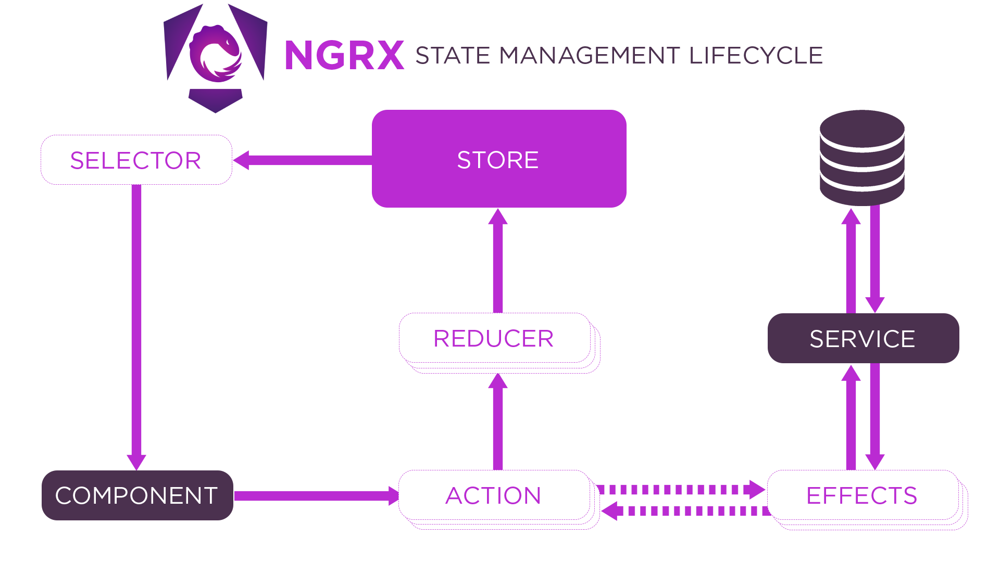

Based on ngrx intro from Angular Foundation
Rohan Fernandes

createEffect
return of(action1(), action2());
catchError inside effect pipelines
catchError(error => of(actionOnFailure({ error })));
const selectFeature = createFeatureSelector<UserState>('user');
const selectUsers = createSelector(selectFeature, s => s.users);
selectUserById = (id: string) =>
createSelector(selectUsers, users => users.find(u => u.id === id));
StoreModule.forFeature('feature', featureReducer);
export function clearState(reducer) {
return (state, action) => {
return action.type === '[Auth] Logout Success'
? reducer(undefined, action)
: reducer(state, action);
};
}
selectors + OnPush for performance